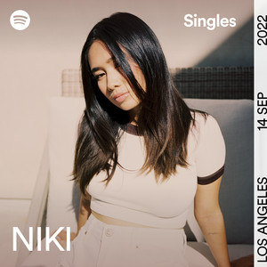

Niki
You'll Be in My Heart
Taylor Swift
You Belong With Me
Cortis
Fashion

Kesan & Pesan
Alasan Memilih Lagu-Lagu Ini
1.Bagussss no debat dan super iconic.
2.my childhood song, and so fun.
3.my new mood boster.